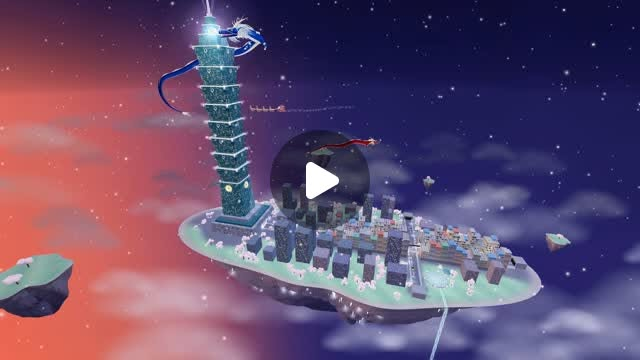

Threads｜浮空台北：Three.js 單一 HTML 互動場景完整提示詞
來源與證據界線
作者表示用 Claude 製作「台北空浮島」，原文寫「fable 5.2 高」、Three.js、單一 HTML、渲染畫面 2 小時；這是作者個案自述，並非本次實測或效果保證。主文發布於 2026-11-22 20:17（台北時間）；完整提示詞見作者本人續文。未取得生成 HTML、實際生成紀錄或可重現結果。

圖為原帖影片公開壓縮首格，含播放圖示，不等於已觀看整段影片；未見明顯個人資訊，重用授權未確認，公開可見並不等於取得授權。未取得影片逐字稿，沒有以影片驗證互動功能。
作者續文完整提示詞
以下為作者原文，去除介面「閱讀全文」標籤：
用 Three.js 做一個單一 HTML 檔的互動 3D 場景「浮空台北」，夜晚、藍紫色天空、遠方有晚霞餘暉。
【場景】
- 一座長形浮空島，底部是倒懸岩層，長著發光的藍色水晶，下方是雲海，周圍漂著幾座種櫻花的小島。
- 島上有一條台灣街道：兩排有騎樓的透天厝和公寓（磁磚外牆、冷氣機、陽台鐵欄杆、晾衣服、屋頂水塔和鐵皮加蓋），掛滿直式和橫式中文招牌（滷肉飯、珍珠奶茶、機車行、藥局等，店名全部虛構，不要用真實品牌），騎樓前停滿機車，馬路上方掛紅燈籠，有電線桿和電線、路口小吃攤。
- 街道盡頭是台北 101：切角塔身、八節下窄上寬的斗狀結構、每節有亮燈簷口和如意環飾、塔基四面有金色古錢幣、多層塔冠和塔尖，塔頂有閃爍的紅色警示燈。
- 路口有會變換的紅綠燈，機車、黃色計程車、公車會在紅燈前停下；人行道上有行人。
- 一條巨大的藍色東方龍繞著 101 飛行，追著一顆發光的龍珠；龍要有平滑的管狀身體、鱗片紋理、鹿角、鬃毛、龍鬚、四肢和背鰭。另外兩條較小的龍（紅、綠）繞島飛行。
- 公園裡有錦鯉池和六角涼亭，池水流到島緣變成瀑布墜入雲海；島上種滿櫻花樹，花瓣飄落；天空有緩緩上升的天燈。
【互動】
- 視角按鈕可切換：環繞全島、街口、池畔餵魚、乘龍飛行（龍背第一人稱）、機車視角（跟著機車騎向 101）、自由飛行（WASD 移動、Q/E 升降、拖曳轉向）。
- 點池面或按「餵錦鯉」丟飼料，錦鯉會游過來吃。
- 天氣按鈕切換下雨（路面變濕亮、騎士穿雨衣、行人撐傘）。
- 按鈕可手動切換紅綠燈。
- 要支援手機觸控（拖曳旋轉、雙指縮放）。
【要求】
一次做完，所有模型用程式碼產生，不要載入外部圖片或模型。介面文字用繁體中文。
官方文件核對與實務提醒
- Anthropic 模型總覽於 2026-11-22 查核列出 Claude Fable 5.2，Claude API ID 為 claude-fable-5-2，預設 effort 為 high；型號與作者寫法相符，但不能證明此作品實際使用的後端、設定或生成過程。
- Three.js 官方入門以 scene、camera、renderer 組合來建立畫面，並示範動畫循環；這只能說明一般技術能力，不保證此提示詞一次完成全部功能。
- 提示詞禁止載入外部圖片或模型，不等於程式不會從外部載入 Three.js 程式庫，也不等於可離線使用。實際依賴、效能、手機互動和安全性均應由程式與執行環境另行檢查。本次沒有安裝或執行作品。
原始連結
使用者提供：https://www.threads.com/share/_7YuF_1VE
主文：https://www.threads.com/@pound0423/post/DgCx-EWCfyJ
作者提示詞續文：https://www.threads.com/@pound0423/post/DgCyRmwmUF7
展開文字：https://www.threads.com/@pound0423/post/DgCyRmwmUF7/media
Anthropic 模型總覽：https://platform.claude.com/docs/en/about-claude/models/overview
Three.js 官方入門：https://threejs.org/manual/#creating-a-scene